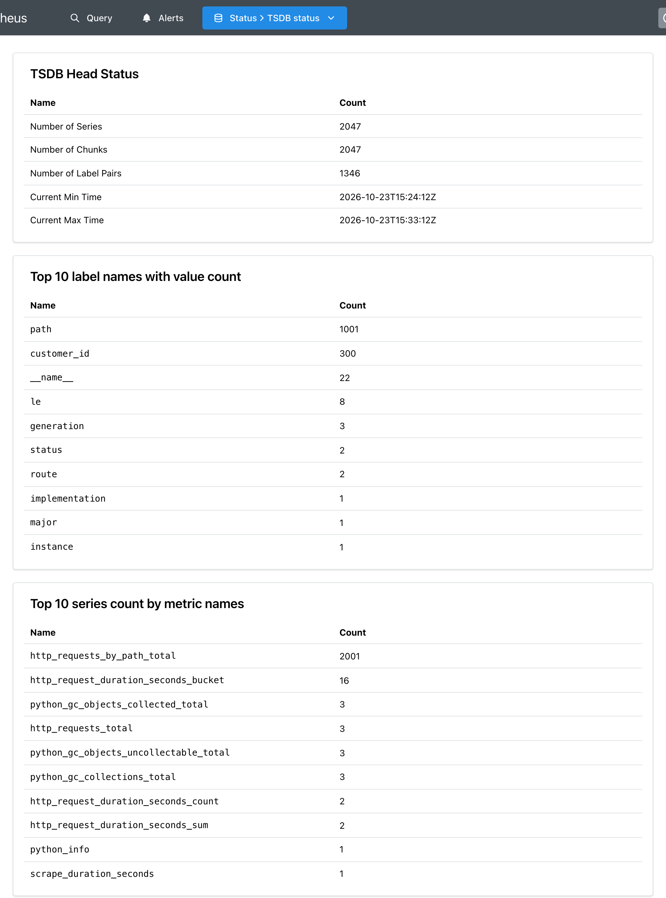

Модуль 3 · метрика как данные · модель данных
Глава 3.7
Кардинальность
и цена детализации
Каждое новое сочетание меток создаёт ряд. В главе посчитано, сколько рядов дают метки, что происходит, когда в метку попадает номер заказа или клиента, как найти такую метку и как ограничить опрос.
- Категория
- Модель данных
- Уровень
- Средний
- Опирается на
- Глава 3.1: объём отсчётов; глава 3.3: идентичность ряда; глава 3.6: ряды гистограммы
- Результат
- Расчёт числа рядов метрики заранее; поиск метки, которая даёт лишние ряды
§1Число рядов из меток
5 цветов × 6 размеров = 30 ячеек. Добавить имя покупателя — ячеек станет 30 на каждого покупателя.
3 адреса × 2 метода × 3 кода = 18 рядов. Добавить номер клиента — 18 на каждого клиента.
Кардинальностьcardinality · число рядов
Число разных рядов метрики, то есть сочетаний значений её меток. Наибольшее — произведение числа значений всех меток; настоящее меньше, потому что ряд появляется, только когда сочетание встретилось.
С полным путём вместо шаблона — до 6 000 рядов, с номером клиента — до 1,8 миллиона на одну метрику и один target. Метка с неограниченным числом значений умножает всё остальное.
§2Опыт: полный путь и номер клиента в метках
С переменной BAD_LABELS=1 сервис ведёт второй счётчик — http_requests_by_path_total с метками path (полный путь) и customer_id (из заголовка X-Customer-Id).
# шаблон адреса: /orders/{order_id} HTTP_REQUESTS.labels(request.method, route, str(response.status_code)).inc() # полный путь /orders/17 и номер клиента — только при BAD_LABELS=1 customer = request.headers.get("X-Customer-Id", "none") REQUESTS_BY_PATH.labels(request.url.path, customer).inc()
Три шага: 20 запросов к заказам 1–20; 980 запросов к заказам 21–1000 со случайными клиентами 1–300; ещё 1000 запросов к заказам 1–1000 с новыми клиентами.
| После шага | Запросов всего | http_requests_total | http_requests_by_path_total | Рядов в базе |
|---|---|---|---|---|
| 1 | 20 | 2 | 21 | 66 |
| 2 | 1 000 | 3 | 1 001 | 1 047 |
| 3 | 2 000 | 3 | 2 001 | 2 047 |
Полосы в одном масштабе: 3 ряда против 2 001.
На третьем шаге адресов не прибавилось, но сочетания «путь + клиент» были новыми: у заказа 17 стало два ряда, customer_id="4" и "185". Дальше рядов стало бы до 1 000 × 300 = 300 000.
Опыт повторяется и без сервиса — только библиотека:
import random from prometheus_client import CollectorRegistry, Counter, disable_created_metrics disable_created_metrics() registry = CollectorRegistry() BY_ROUTE = Counter("http_requests_total", "By route", ["route"], registry=registry) BY_PATH = Counter("http_requests_by_path_total", "By path", ["path", "customer_id"], registry=registry) def series(metric): return len(next(iter(metric.collect())).samples) random.seed(1) for step, orders in enumerate([range(1, 21), range(21, 1001), range(1, 1001)], start=1): for order_id in orders: BY_ROUTE.labels("/orders/{order_id}").inc() BY_PATH.labels(f"/orders/{order_id}", str(random.randint(1, 300))).inc() print(f"шаг {step}: route — {series(BY_ROUTE)}, path + customer_id — {series(BY_PATH)}")
шаг 1: route — 1, path + customer_id — 20 шаг 2: route — 1, path + customer_id — 1000 шаг 3: route — 1, path + customer_id — 1996
Рядов 1 996: четыре раза случайный номер клиента повторился у того же заказа.
§3Что растёт вместе с числом рядов
Запросов к сервису больше не стало. Выросла работа на всём пути числа: память приложения, ответ /metrics, сеть, разбор и хранение в Prometheus.
| После шага | Ответ /metrics, байт | Строк значений | scrape_samples_scraped | Память меток path в TSDB, байт |
|---|---|---|---|---|
| 1 | 5 516 | 61 | 61 | — |
| 2 | 73 787 | 1 042 | 1 042 | 16 900 |
| 3 | 143 325 | 2 042 | 2 042 | 33 793 |
Ответ вырос в 26 раз. 2 042 отсчёта за опрос — это ≈ 11,8 миллиона в сутки вместо 350 тысяч. На стенде это килобайты, а в системе с сотнями target и миллионами рядов — гигабайты памяти сервера.
§4Страница TSDB status
Виновника ищут на странице Status → TSDB status (TSDB — база временных рядов Prometheus). Снимок после третьего шага:

Нужны три таблицы. TSDB Head Status — всего рядов: 2047. Top 10 label names with value count — метки с наибольшим числом значений: path — 1001, customer_id — 300 (у route — 2). Top 10 series count by metric names — метрики с наибольшим числом рядов: http_requests_by_path_total — 2001.
По второй таблице находят метку, по третьей — метрику, затем в коде — место, где метрика получает значение метки.
§5Какие значения записывать в метки
В отчёт пишут число приёмов по отделениям, а фамилии остаются в картах.
В метки — значения из короткого списка. Номера заказов и клиентов — в лог и трассу.
Значение метки берётся из небольшого заранее известного набора. Документация советует держать кардинальность большинства метрик ниже 10.
| Значение | Сколько разных | Где хранить |
|---|---|---|
| Метод HTTP | несколько | Метка method |
Шаблон адреса /orders/{order_id} | сколько маршрутов в коде | Метка route |
| Код ответа | несколько десятков | Метка status, или класс кода: 2xx, 4xx, 5xx |
Полный путь /orders/17 | сколько заказов | Лог запроса |
| Номер клиента, адрес почты | сколько клиентов | Лог, трасса |
| Идентификатор запроса | по одному на запрос | Лог, трасса (глава 1.5) |
| Текст ошибки | не ограничено | Лог; в метку — тип ошибки из короткого списка |
Для ошибок в метку пишут тип исключения, номера и текст — в лог:
import logging from prometheus_client import CollectorRegistry, Counter, disable_created_metrics, generate_latest disable_created_metrics() logging.basicConfig(format="%(levelname)s %(message)s") log = logging.getLogger("orders") registry = CollectorRegistry() ERRORS = Counter("order_errors_total", "Failed orders", ["error"], registry=registry) def create_order(order_id, customer_id): raise TimeoutError(f"warehouse timeout for order {order_id}") for order_id, customer_id in [(17, 4), (18, 185)]: try: create_order(order_id, customer_id) except Exception as exc: ERRORS.labels(type(exc).__name__).inc() # в метку — тип ошибки log.error("order=%s customer=%s: %s", order_id, customer_id, exc) # номера и текст — в лог print(generate_latest(registry).decode())
ERROR order=17 customer=4: warehouse timeout for order 17
ERROR order=18 customer=185: warehouse timeout for order 18
# HELP order_errors_total Failed orders
# TYPE order_errors_total counter
order_errors_total{error="TimeoutError"} 2.0
На стенде путь заменён шаблоном маршрута FastAPI. Для запроса без маршрута функция возвращает "unknown", иначе случайные адреса тоже создавали бы ряды.
def route_of(request: Request) -> str: route = request.scope.get("route") return getattr(route, "path", "unknown")
§6Предел sample_limit
При перегрузке он отключает всю линию: свет гаснет, проводка остаётся целой.
Если отсчётов в ответе больше предела, опрос отклоняется целиком: метрик target нет, но и база не растёт.
scrape_configs:
- job_name: orders
sample_limit: 500
static_configs:
- targets: ['api:8000']
С этим файлом (PROM_CONFIG=prometheus-limit.yml BAD_LABELS=1 docker compose up -d prometheus) и ответом из 2 042 отсчётов target ушёл в DOWN:
sample limit exceeded
Вместе с лишними рядами пропали и нужные. Поэтому предел ставят с запасом над обычным числом отсчётов (на стенде 61 против 500), а после срабатывания исправляют метки в приложении.
§7Проверьте себя
Вопрос 1У метрики метки route (5 значений), method (2) и status (4). Сколько рядов может быть у неё на одном target в наибольшем случае?
Числа значений перемножают.
Верно: 5 × 2 × 4.
3 — число меток.
Вопрос 2Что из этого подходит для значения метки?
Сколько пользователей, столько значений. Почту хранят в логе.
Верно. Так устроена метка
paymentна стенде.Почти каждое значение новое. Длительность пишут в гистограмму.
Вопрос 3На странице TSDB status в таблице Top 10 label names with value count первой стоит метка request_id с числом 48 000. Что это значит?
Верно. Дальше — найти метрику в Top 10 series count by metric names.
Это число разных значений метки. Число запросов показывает счётчик.
Таблица считает значения меток в базе.
Вопрос 4У задания sample_limit: 1000, ответ target содержит 1 200 отсчётов. Что сохранит Prometheus?
Ответ отклоняется целиком.
На стенде target перешёл в DOWN.
Верно. Ошибка — sample limit exceeded.
- Prometheus. Instrumentation: use labels; do not overuse labels — prometheus.io/docs/practices/instrumentation
- Prometheus. Metric and label naming: labels — prometheus.io/docs/practices/naming
- Prometheus. Configuration: scrape_config, sample_limit — prometheus.io/docs/prometheus/latest/configuration/configuration
- Стенд модуля 3: опыт с BAD_LABELS=1 и sample_limit 23.10.2026